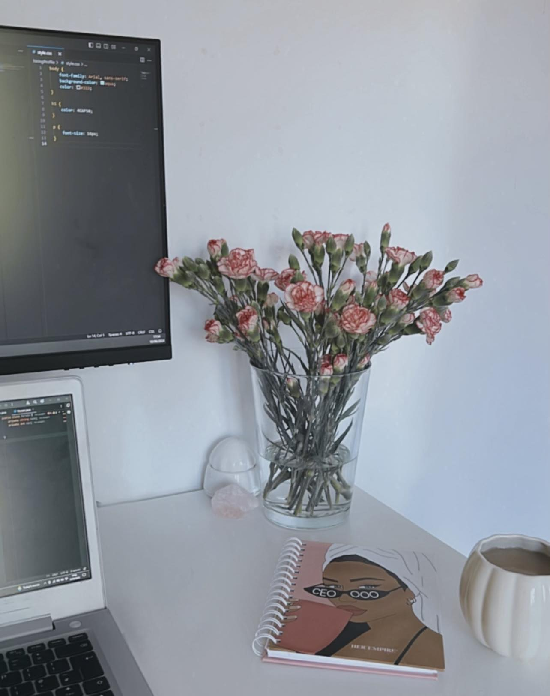

01 // Professional Summary
Aspiring Full Stack Engineer with a Bachelor's Degree in Computer Science and Web development. Proficient in front-end and back-end including HTML, CSS, JavaScript and PHP. Demonstrated ability to design and implement innovative solutions in web development and cloud computing.
Strong analytical skills with experience in agile development, problem-solving, and optimizing system performance. Passionate about leveraging technical expertise to develop scalable web solutions.
02 // Technical Skills
- Front-End: HTML, CSS, JavaScript
- Back-End: PHP, Java
- Database Management: MySQL
- Tools & Platforms: Github, AWS, VS Code

03 // Work Experience
Rapport at Accenture - Office Team Lead
09/2023 - Current
- Coordinated technical operations and project requirements, ensuring the seamless execution of strategic plans.
- Utilized data-driven decision-making to optimize team workflows, increasing productivity and reducing project delivery time.
- Supported the implementation of software tools to enhance office communication and collaboration.
Hollister Co. - Assistant Manager
08/2019 - 08/2023
- Overseeing inventory management systems, leading to a 20% increase in stock accuracy.
- Designed and implemented data-driven sales strategies, integrating insights and latest trends to optimize product offerings.
04 // Education
Bachelor of Science in Computer Science with Web Development
Northumbria University: 09/2016 - 05/2019
- Developed multiple web applications utilizing HTML, CSS, PHP, and JavaScript.
- Experience in Agile UX projects which integrate user-centered design with Agile development methodologies.
- Project modules supporting experience in Agile UX, Smart Technology, Virtual Reality and Cloud Computing
- Developed multiple web applications utilizing HTML, CSS, PHP, and JavaScript.
- Experience in Agile UX projects which integrate user-centered design with Agile development methodologies.
- Project modules supporting experience in Agile UX, Smart Technology, Virtual Reality and Cloud Computing
Contact
Details
Phone: 07847725430
Email: Marialouise1216@gmail.com
Address
Newcastle, Northumberland
Open to relocating